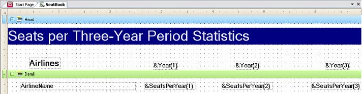

The purpose of this article is to describe how to define variables and arrays, as well as their usage and initialization.
By pressing Ctrl+Sifht+V or by selecting Insert > Variable in the main GeneXus Menu, you can define a variable in any GeneXus object. Then, you will be able to proceed with the Variable definition.
Using Multidimensional Arrays
A multidimensional variable array is defined just as a common variable is defined, but you must select the one/two dimension(s) in the
Dimensions property (Scalar, Vector, and Matrix) that you will use.
Array Initialization
To initialize an array (assign values to its elements) assign an expression to the whole array (indicated by the array’s name followed by parenthesis, without subscripts). For example:
&arr() = 0
&arr() = nullvalue(&arr)
&arr() = attr + 25|&var
Methods are not supported.
Array Usage
A common use is found when we want to generate a 2D-array report:
Layout:

Source:
&SeatsPerYear() = 0
Print Head
For Each AirlineId
For Each FlightDepartureTime
Where Year(FlightDepartureTime) >= &Year(1)
Where Year(FlightDepartureTime) <= &Year(3)
For &i = 1 to 3
If Year(FlightDepartureTime) = &Year(&i)
&SeatsPerYear += 1
EndIf
EndFor
EndFor
Print Detail
EndFor
Array Passed as Parameter
Be sure to define the array in both objects (caller and called), with the same dimension. Otherwise, unpredictable results may occur. Subscripts that are out of range will only be detected at execution time. However, numeric constant subscripts are checked, ensuring that they do not exceed the array’s dimensions.
Array Rows & Columns
The functions
Rows(&Arr()) and
Cols(&Arr()) respectively, are used to get the number of rows (1st dimension) and columns (2nd dimension) that have been defined for an array. This is useful, because it is better to work with these functions when defining a programming loop (
Do While), so your loop will never be affected if the dimensions of the array were to change.
The following example illustrates how to load a 2D-array whose elements will be the sum of their subscripts (row and column):
&i = 1
Do while &i <= rows(&arr()) //This cycle will continue to work regardless of changes in the definition of the array.
j = 1
Do while &j <= cols(&arr())
&arr(&i,&j) = &i + &j
&j += 1
EndDo
&i += 1
EndDo
- You can only define Variables as arrays. On the other hand, you cannot define Attributes as arrays.
- You cannot refer to a particular element of the array when using the NoAccept Rule. That is, the array is either entirely accepted or it is not accepted at all. The same applies when assigning colors to an array.
- In Transactions, arrays cannot be received as parameters.
Objects: Procedure object, Transaction object, Web Panel object
Variable definition
Attribute definition